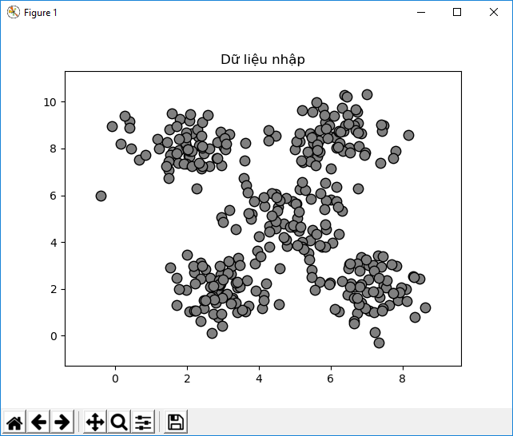
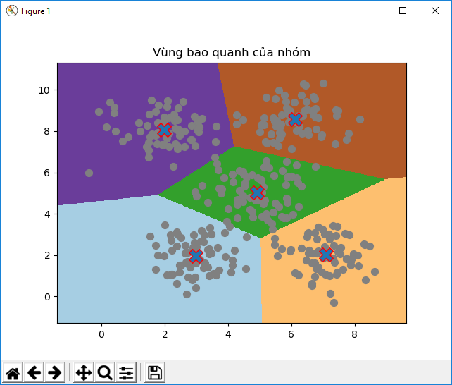
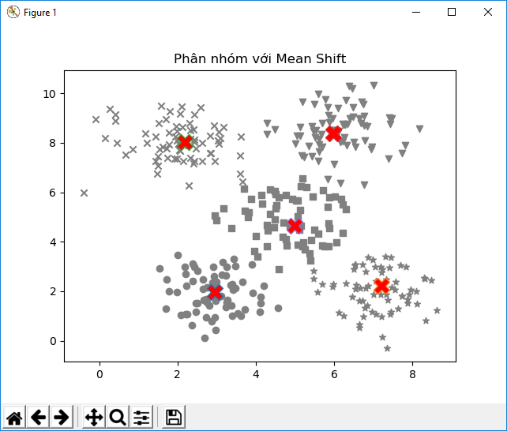
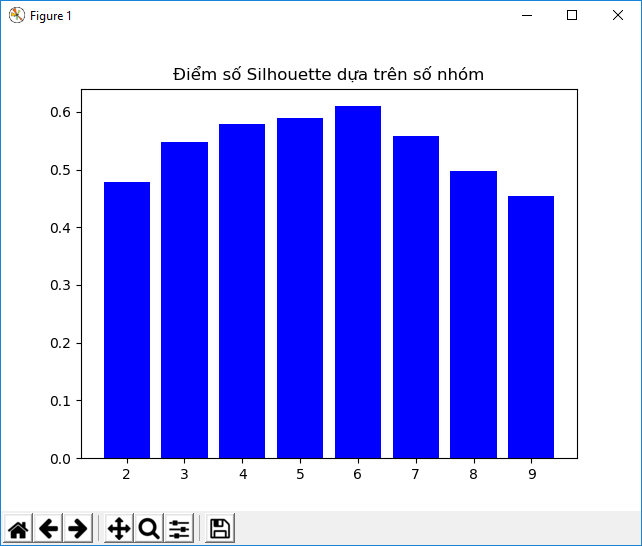
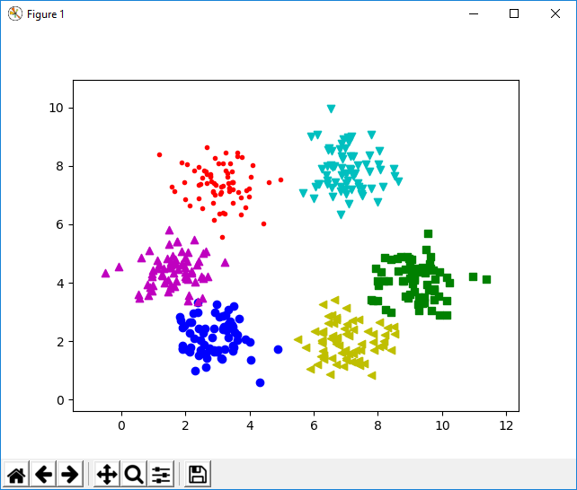
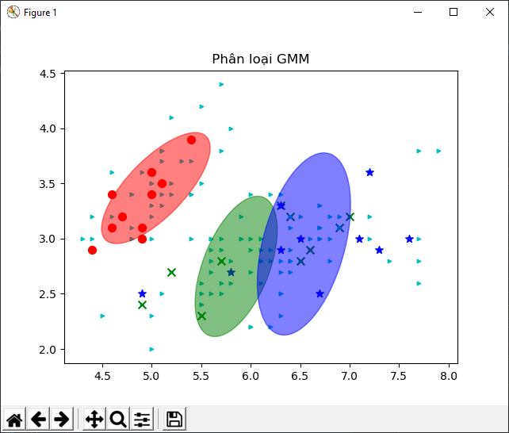
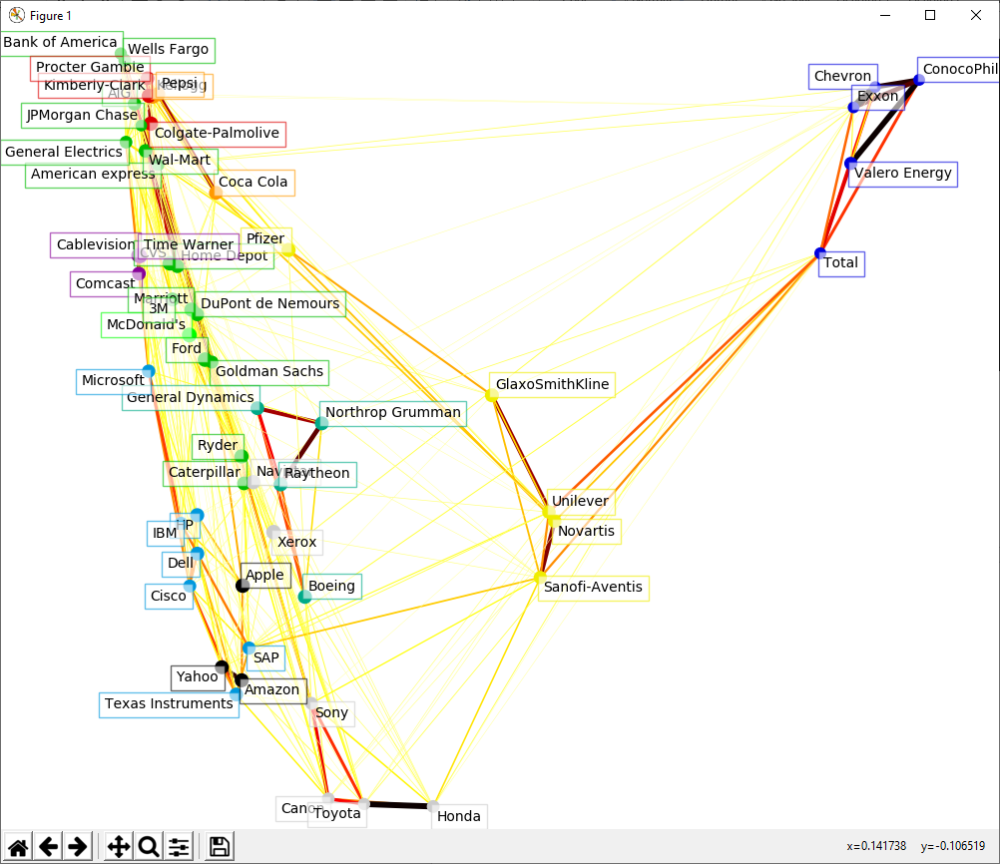
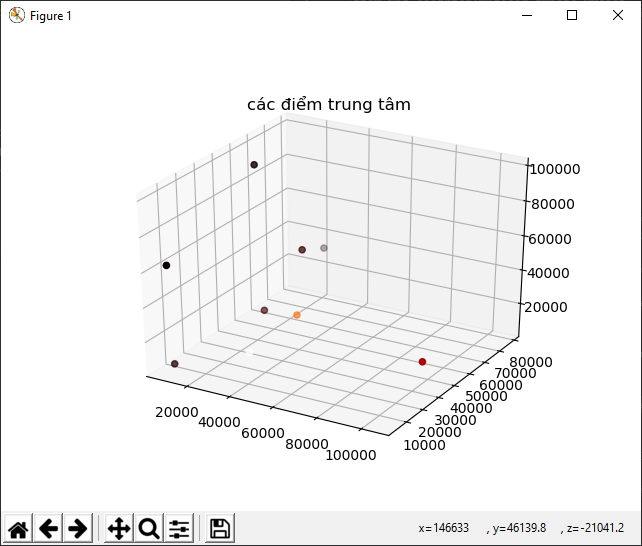

4
Phát hiện mẫu (Detecting Patterns) với
Học không giám sát (Unsupervised Learning)
Trong chương này chúng ta sẽ học về học không giám sát và cách sử dụng nó trong thực tế. Khi học hết chương này thì chúng ta sẽ biết các kiến thức như sau:
Học không giám sát là gì (what's unsupervised learning)?
Học không giám sát là cách xây dựng một mô hình machine learning mà không sử dụng tới tập nhãn trong tập dữ liệu training. Học không giám sát được tìm thấy trong các ứng dụng khác nhau trong lĩnh vực học tập, kể cả phân khúc thị trường, thị trường chứng khoán, xử lý ngôn ngữ, computer vision, và nhiều thứ khác tương tụ thế.
Trong chương trước chúng ta đã làm việc cùng với những dữ liệu mà nó đã được dán nhãn (labeled) sẵn. Khi chúng ta có các nhãn dán trong dữ liệu training, thuật toán học cách phân loại dựa trên những nhãn đó. Nhưng trong thực tế, chúng ta không phải lúc nào cũng có những dữ liệu được dán nhãn sẵn. Đôi khi chúng ta có cả đống dữ liệu và chúng ta cần phải phân loại nó bằng một cách nào đó. Đây là lúc cần để cho Học Không giám sát thể hiện khả năng. Học không giám sát là thuật toán cố gắng xây dựng một mô hình học mà nó có thể tìm các nhóm nhỏ trong tập dữ liệu được cho sử dụng một số số liệu tương tự.
Hãy xem làm thế nào mà chúng ta xây dựng công thức vấn đề học tập trong học không giám sát. Khi chúng ta có một tập dữ liệu mà nó không có một nhãn nào trong đó, chúng ta giả định rằng dữ liệu đã được tạo ra bởi các biến được phân phối theo một cách nào đó. Quá trình học có thể tiến hành theo cách phân cấp. Bắt đầu từ những điểm dữ liệu chúng ta tạo ra. Chúng ta có thể xây dựng lên những lớp sâu hơn đại điện cho dữ liệu đó.
Phân nhóm dữ liệu cùng với thuật toán K-Means
Phân nhóm là một trong những thứ thông dụng nhất trong kỹ thuật học không giám sát. Kỹ thuật này được sử dụng để phân tích dữ liệu và tìm những nhóm bên trong trong bộ dữ liệu đó. Để tìm những nhóm chúng ta sử dụng một vài thứ như tính toán khoảng cách Euclidean ( Euclidean distance), để tìm nhóm nhỏ hơn. Biện pháp này cũng tương tự có thể ước tính độ chặt chẽ của một nhóm. Chúng ta có thể gọi cách phân nhóm này là quá trình tổ chức dữ liệu của chúng ta thành các nhóm nhỏ nơi mà những thành phần trong đó giống với nhau.
Mục đích của chúng ta là xác định các thuộc tính của các điểm dữ liệu và làm cho chúng thuộc về chung một nhóm. Không có một hàm phổ cập hay thuật toán nào có thể sử dụng cho tất cả các trường hợp. Nó dựa trên vấn đề mà chúng ta đang có. Ví dụ, chúng ta có thể thích tìm những điểm dữ liệu trùng hợp trong tập dữ liệu hoặc chúng ta có thể thích tìm những trường hợp ngoại lệ trong tập dữ liệu của chúng ta. Tùy tình hình mà chúng ta sẽ quyết định chọn những thước đo phù hợp.
K-means là một thuật toán nổi tiếng trong việc phân nhóm dữ liệu. Để dùng thuật toán này, chúng ta cần phải giả định số của những nhóm này được biết trước. Sau đó chúng ta phân chia dữ liệu vào trong K-nhóm sử dụng những thuộc tính dữ liệu khác nhau. Chúng ta bắt đầu bằng việc cố định số nhóm và phân loại dữ liệu của chúng ta dựa trên đó. Ý tưởng chính ở đây là chúng ta cần cập nhật vị trí của trọng tâm K bằng cách lặp đi lặp lại liên tục cho tới khi chúng ta có một chỗ đặt tối ưu nhất cho nó.
Chúng ta có thể thấy vị trí đặt ban đầu của trọng tâm (centroid) là quan trọng nhất trong thuật toán. Những trọng tâm (centroids) nên được đặt một cách thông minh, bởi vì nó sẽ tác động trực tiếp đến kết quả. Cách tốt nhất là chúng ta nên đặt nó cách xa nhau. Về cơ bản thuật toán K-Means đặt những trọng tâm này một cách ngẫu nhiên nơi K-Means++ chọn những điểm thuật toán từ những điểm dữ liệu của danh sách input. Nó sẽ cố đặt những điểm trọng tâm cách xa nhau và gộp lại nhanh chóng. Sau đó chúng ta xét qua tập dữ liệu training và đặt những điểm dữ liệu này gần điểm trọng tâm.
Khi chúng ta duyệt qua toàn bộ dữ liệu, chúng ta gọi đó là lần lặp đầu tiên đã kết thúc. Chúng ta có những điểm được nhóm lại dựa trên những trọng tâm đã được khởi tạo. Giờ thì chúng ta cần tính lại vị trí của những điểm trọng tâm dựa trên những nhóm mới mà chúng ta có được ở lần lặp lại đầu tiên. Khi chúng ta có được bộ điểm trọng tâm K mới, chúng ta lặp lại việc xử lý một lần nữa, chúng ta lặp lại tập dữ liệu và gán những điểm mới thành điểm trọng tâm.
Bằng cách lặp lại các bước như thế, Điểm trọng tâm di chuyển dần tới vị trí cân bằng. Sau một số lần lặp nhất định, điểm trung tâm sẽ không thay đổi vị trí của nó nữa. Điều đó có nghĩa là chúng ta đã tìm được vị trí cuối cùng của điểm trọng tâm. Những điểm trọng tâm K này là những điểm K-Means mà chúng ta sẽ sử dụng để kết luận.
Giờ thì đặt những nhóm K-Means này vào mảng dữ liệu hai chiều và xem nó làm việc như thế nào. CHúng ta sẽ sử dụng dữ liệu ở trong file data/chap4/data_clustering.txt. Mỗi dòng có 2 số được phân tách với nhau bởi dấu ','.
Tạo 1 file python mới và đặt tên là kmeans.py
import numpy as np
import matplotlib.pyplot as plt
from sklearn.cluster import KMeans
from sklearn import metrics
# Load dữ liệu
input_file="data/chap4/data_clustering.txt"
X=np.loadtxt(input_file,delimiter=",")
# Thử biểu diễn dữ liệu input để xem chúng hỗn loạn thế nào
plt.figure()
plt.scatter(X[:,0],X[:,1],marker='o',facecolors='gray',edgecolors='black',s=80)
#print((X[:,0]))
x_min,x_max=X[:,0].min()-1,X[:,0].max()+1
#print(x_min,x_max)
y_min,y_max =X[:,1].min()-1,X[:,1].max()+1
plt.title('Dữ liệu nhập')
plt.xlim(x_min,x_max)
plt.ylim(y_min,y_max)
plt.xticks()
plt.yticks()
plt.show()
# Chạy thử code ở đoạn này bạn sẽ thấy dữ liệu input được phân thành 5 nhóm. Tạo 1 K-Means Object sử dụng các tham số khai báo init,n_clusters,n_init.
# Tham số init đại diện cho phương thức của phép khởi tạo để khởi tạo vị trí trung tâm của trọng tâm, thay vì chọn chúng một cách ngẫu nhiên chúng ta chọn sử dụng 'k-means++' để chọn vị trí trung tâm một cách tốt hơn
# Tham số n_cluslters chỉ số nhóm sẽ tạo
# Tham số n_init chỉ ra số lần thuật toán sẽ chạy trước khi quyết định ra số outcome tốt nhất.
kmeans=KMeans(init='k-means++',n_clusters=5,n_init=10)
# Train K-means với dữ liệu input
model=kmeans.fit(X)
# Để biểu diễn vòng bao quanh dữ liệu chúng ta cần tạo một lưới gồm những điểm và đánh giá mô hình trên những điểm đó,
# Define các bước của grid này:
step_size=0.01
#Chúng ta định nghĩa lưới điểm này và đảm bảo chúng ta đã bọc tất cả những giá trị dữ liệu input
x_vals,y_vals=np.meshgrid(np.arange(x_min,x_max,step_size),np.arange(y_min,y_max,step_size))
# Dự đoán kết quả output cho tất cả các điểm trên lưới sử dụng mô hình K-means đã train;
output=kmeans.predict(np.c_[x_vals.ravel(),y_vals.ravel()])
# Biểu diễn tất cả các giá trị ouput và đổ màu cho mõi nhóm:
output=output.reshape(x_vals.shape)
plt.figure()
plt.clf()
plt.imshow(output,interpolation='nearest',extent=(x_vals.min(),x_vals.max(),y_vals.min(),y_vals.max()),cmap=plt.cm.Paired,aspect='auto',origin='lower')
# Chồng những điểm dữ liệu input lên trên những vùng được tô màu:
plt.scatter(X[:,0],X[:,1],marker='o',facecolors='none',edgecolors='gray',facecolor='gray',s=50)
# Vẽ điểm trọng tâm của nhóm có được sử dụng thuật toán K-means
cluster_centers=kmeans.cluster_centers_
plt.scatter(cluster_centers[:,0],cluster_centers[:,1],marker='X',s=200,edgecolors='red')
plt.title("Vùng bao quanh của nhóm")
plt.xlim(x_min,x_max)
plt.ylim(y_min,y_max)
plt.xticks()
plt.yticks()
plt.show()
Chạy file python trên ta có 2 hình như sau

Đây là hình dữ liệu đầu vào

Và đây là hình sau khi đã được phân nhóm sau khi sử dụng thuật toán KMeans. Dấu X màu xanh viền đỏ đại diện cho điểm trọng tâm của nhóm đó.
Tính toán số của nhóm bằng thuật toán Mean Shift.
Mean Shift là một thuật toán rất mạnh được sử dụng nhiều trong unsupervised learning. Nó là một thuật toán thống kê phi tham số được sử dụng thường xuyên cho phân nhóm. (Phi tham số là gì thì các thím tìm sách thông kê đọc tiếp nhé). ở đây mình chỉ xét Mean Shift không cần phải đưa cho nó số nhóm mà nó sẽ tự tìm ra số nhóm. Mean Shift được ứng dụng rất nhiều trong nhiều lĩnh vực khác nhau như Theo dõi vật thể hay xử lý dữ liệu trong thời gian thực.
Mục đích của Mean Shift là tìm điểm trọng tâm. Trên mỗi điểm dữ liệu trong tập dữ liệu training nó sẽ định nghĩa một vùng window xung quanh đó. Sau đó nó sẽ tính điểm trọng tâm cho vùng window này và cập nhật vị trí trọng tâm. Nó sẽ lặp lại việc này với vị trí mới bằng cách định nghĩa một vùng window khác xung quanh nó. bằng cách lặp đi lặp lại như thế chúng ta sẽ tiến dần tới trọng tâm của nhóm. Mỗi điểm dữ liệu sẽ di chuyển tới nhóm mà nó thuộc về. Những điểm này sẽ di chuyển dần tới những vùng có mật độ cao hơn. Và vùng window này là vùng quét để tính mean
Chúng tiếp tục di chuyển những điểm trọng tâm một khoảng cách và nó được gọi là (means). Khi di chuyển (shifting) một khoảng (means) nên nó được gọi là Mean Shift! Chúng tiếp tục di chuyển cho tới khi thuật toán dừng lại và các điểm trọng tâm không di chuyển nữa.
Nói nhiều cũng méo hiểu mấy vì kiến thức về xác suất thống kê thủng một lỗ to đùng :D xem code thế nào nào:
tạo 1 file đặt tên là mean_shift.py
import numpy as np
import matplotlib.pyplot as plt
from sklearn.cluster import MeanShift,estimate_bandwidth
# load dữ liệu làm dữ liệu đầu vào
X=np.loadtxt("data/chap4/data_clustering.txt",delimiter=',')
# Ước tính mật độ của dữ liệu đầu vào ( Bandwidth of input data).
# Tham số bandwidth là tham số cơ sở ước tính mật độ hạt nhân (kernel estimation) được sử dụng bởi thuật toán Mean Shift
# Băng thông ( mật độ ) ảnh hưởng đến tốc độ di chuyển của thuật toán và số lượng nhóm
# vì thế đây làm một tham số quan trọng. Nếu số bandwidth nhỏ, nó sẽ tạo ra kết quả là có quá nhiều nhóm, nếu giá trị của bandwidth lớn thì nó sẽ nhập những nhóm khác biệt vào với nhau
# Tham số quantile ảnh hưởng tới tham số bandwidth, nếu số quantile lớn nó sẽ làm tăng số bandwidth
bandwidth_X=estimate_bandwidth(X,quantile=0.1,n_samples=len(X))
# Train mô hình MeanShift sử dụng số bandwidth bên trên
meanshift_model=MeanShift(bandwidth=bandwidth_X,bin_seeding=True)
meanshift_model.fit(X)
# Tìm những điểm trung tâm của tất cả các nhóm
cluster_centers=meanshift_model.cluster_centers_
print("\n Các điểm trọng tâm: ",cluster_centers)
# Tìm những số của nhóm
labels=meanshift_model.labels_
num_clusters=len(np.unique(labels))
print("\n Số nhóm được phân chia =",num_clusters)
#biểu diễn dữ liệu thành hình ảnh
plt.figure()
markers='o*xvs'
for i,markers in zip(range(num_clusters),markers):
plt.scatter(X[labels==i,0],X[labels==i,1],marker=markers,color='gray')
cluster_center=cluster_centers[i]
plt.plot(cluster_center[0],cluster_center[1],marker='X',markerfacecolor='red',markersize=15)
plt.title('Phân nhóm với Mean Shift')
plt.show()
Kết quả thu được

Terminal :
[7.20690909 2.20836364]
[2.17603774 8.03283019]
[5.97960784 8.39078431]
[4.99466667 4.65844444]]
Ước tính chất lượng của nhóm cùng với điểm silhouette:
Nếu dữ liệu được tổ chức tự nhiên thành những nhóm riêng biệt thì nó quá dễ để hình dung và rút ra được kết luận. Nhưng nó rất hiếm khi xảy ra trong thực tế. Dữ liệu thực tế rất lớn và xáo trộn. Vì vậy chúng ta cần phải định nghĩa veefchaats lượng của các nhóm.
Số Silhouette là một phương thức sử dụng để kiểm tra tính chắc chắn của nhóm trong dữ liệu của chúng ta. Nó đưa ra một ước tính về mỗi điểm dữ liệu có phù hợp với nhóm nó thuộc về không. Điểm Silhouette là một số liệu để đo điểm dữ liệu có phù hợp với một nhóm, cũng như so sánh với các nhóm khác.
Trên mỗi điểm dữ liệu điểm silhouette score được tính dựa trên công thức:
silhouette score=(p-q)/max(p,q)
ở đây
Giá trị của số silhouette nằm trong khoảng từ -1 -> 1. Điểm số càng gần với 1 thì có nghĩa là điểm dữ liệu đó giống với các điểm dữ liệu thuộc nhóm đó. Nếu bạn có quá nhiều ddiemr âm silhouette thì có nghĩa là chúng ta có thể có quá nhiều nhóm trong dữ liệu của chúng ta. Chúng ta cần chạy thuật toán phân nhóm một lần nữa để tìm số nhóm tối ưu hơn.
Giờ thì thử đoạn code sau với silhouette score nào. File python -> ten là silhouette_scores.py
import numpy as np
import matplotlib.pyplot as plt
from sklearn.cluster import KMeans
from sklearn import metrics
X=np.loadtxt("data/chap4/data_quality.txt",delimiter=',')
scores=[]
# Khởi tạo giá trị. values array là một danh sách dữ liệu mà chúng ta muốn lặp để tìm số nhóm tối ưu
values=np.arange(2,10)
# Lặp tất cả các giá trị và xây dựng một mô hình KMeans trong mỗi lần lặp:
for num_clusters in values:
kmeans=KMeans(init='k-means++',n_clusters=num_clusters,n_init=6)
# Train Kmeans model
kmeans.fit(X)
#Ước tính số điểm silhouette cho mô hình bên trên sử dụng phép tính khoảng cách Euclidean
score=metrics.silhouette_score(X,kmeans.labels_,metric='euclidean',sample_size=len(X))
print("Số nhóm =",num_clusters)
print("Điểm silhouette: ",round(score,3))
scores.append(score)
#Biểu diễn điểm số silhouette cho những giá trị khác nhau
plt.figure()
plt.bar(values,scores,width=0.8,color='blue')
plt.title('Điểm số Silhouette dựa trên số nhóm')
plt.show()
# Lấy Số nhóm tương ứng tốt nhất dựa trên điểm Silhouette
num_clusters=np.argmax(scores)+values[0]
print(" Số nhóm tối ưu nhất: ",num_clusters)
# Train lại dữ liệu với số nhóm tối ưu nhất để vẽ ra màn hình
kmeans.n_clusters=num_clusters
kmeans.fit(X)
# Biểu diễn lại dữ liệu input với số nhóm được chia
#visualize_clusters(X,kmeans.labels_,'Phân nhóm tối ưu dữ liệu Input')
labels=kmeans.labels_
plt.figure()
colors = 'rgbcmykw'
markers = '.,ov^<>12348spP*hH+xXdD|_'
num_clusters = len(np.unique(labels))
markers = markers[0:num_clusters]
colors = colors[0:num_clusters]
for i, marker in zip(range(num_clusters), markers):
plt.scatter(X[labels == i, 0], X[labels == i, 1], marker=marker, color=colors[i])
x_min, x_max = X[:, 0].min() - 1, X[:, 0].max() + 1
# print(x_min,x_max)
y_min, y_max = X[:, 1].min() - 1, X[:, 1].max() + 1
plt.title = 'Phân nhóm tối ưu với Silhouette Scores'
plt.xlim(x_min, x_max)
plt.ylim(y_min, y_max)
plt.xticks()
plt.yticks()
plt.show()
Kết quả :
Số nhóm = 2
Điểm silhouette: 0.478
Số nhóm = 3
Điểm silhouette: 0.547
Số nhóm = 4
Điểm silhouette: 0.579
Số nhóm = 5
Điểm silhouette: 0.589
Số nhóm = 6
Điểm silhouette: 0.61
Số nhóm = 7
Điểm silhouette: 0.554
Số nhóm = 8
Điểm silhouette: 0.498
Số nhóm = 9
Điểm silhouette: 0.445
Số nhóm tối ưu nhất:


Bạn cũng có thể thay dữ liệu đầu vào bằng file data_clustering.txt sẽ có kết quả phân nhóm tối ưu là 5
Mô hình Gaussian Mixture là gì ?
Trước khi chúng ta nói về mô hình Gaussian Mixture chúng ta cần phải hiểu mô hình Mixture là gì. Một mô hình Mixture là một dạng mô hình tính mật độ xác suất, chúng ta giả định những dữ liệu được điều chỉnh bởi một ố thành phần phân phối. Nếu những thành phần phân phối đó là Gaussian, thì nhưng mô hình đó được gọi là mô hình Gaussian Mixture. Những thành phần phân phối này được kết hợp theo thứ tự để tạo thành một hàm mật độ đa phương thức (multi-modal) thứ mà sẽ trở thành mô hình hỗn hợp (mixture model).
Hãy thử xem một ví dụ để hiểu cách làm việc của mô hình hỗn hợp (Mixture Model). Chúng ta muốn xây dựng một mô hình thói quem mua sắm của tất cả người dân ở Nam Mỹ. Có một cách đó là tìm tất cả thói quen mua sắm của cả lục địa nam mỹ vào trong một mô hình. Nhưng ta cũng biết là mỗi người ở mỗi nước có những thói quen mua sắm khác nhau. Chúng ta cần hiểu cách mọi người trong mỗi quốc gia mua sắm như thế nào. Nếu chúng ta muốn có được một mô hình tiêu biểu, chúng ta cần phải tính cho tất cả những thay đổi trong lục địa Nam mỹ. Trong trường hợp này chúng ta có thể dùng mixture models để xây dựng mô hình thói quen mua sắm của từng nước và sau đó kết hợp chúng lại thành một mô hình lớn Mixture Models. Bằng cách này chúng ta sẽ không bị thiếu các hành vi cơ bản của từng nước. Bằng cách không bắt tất cả các nước dùng chung một mô hình, chúng ta có thể trích xuất dữ liệu chính xác hơn.
Một thứ thú vị được chú ý ở đây mixture models là một bán tham số, nó có nghĩa là chúng phụ thuộc một phần vào một tập hợp các hàm xác định trước (predefied functions). Chúng cũng có thể cung cấp xác suất tốt hơn trong mô hình hóa các phân phối cơ bản trong dữ liệu của chúng ta. Chúng có thể lấp đầy các khoảng trống trong một bộ dữ liệu thưa thớt.
Nếu chúng ta định nghĩa hàm, thì mixture model sẽ biến từ bán-tham số (semi-parametric) thành tham số (prametric). Mô hình bao gồm cả tham số có số chiều hữu hạn và tham số có số chiều vô hạn thường được gọi là mô hình bán tham số. Vì thế Gaussian Mixture Model (GMM) là một mô hình tham số đại diện như một trọng số của hàm Gaussian ( Tìm hiểu thêm hàm Gaussian trên google nhé).. Chúng ta giả định những dữ liệu đó được tao ra bởi một bộ của mô hình Gaussian và kết hợp với nhau bằng cách nào đó. GMM rất mạnh và thường được ứng dụng trong rất nhiều lĩnh vực. Tham số của GMM được ước tính từ dữ liệu training sử dụng các thuật toán như (Expectation-maximization (EM) hay Maximum A-posteriori(MAP). Một vài ứng dụng thông dụng của GMM như là truy suất cơ sở dữ liệu hình ảnh, mô hình biến động thị trường chứng khoán, xác minh sinh trắc, và nhiều thứ nữa.
Xây dựng một bộ phân loại dựa trên GMM
Giờ thì dùng Python làm một mô hình GMM để xem thử. Tạo một file Python đặt tên là Gaussian_mixture.py:
import numpy as np
import matplotlib.pyplot as plt
from matplotlib import patches
from sklearn import datasets
from sklearn.mixture import GaussianMixture
from sklearn.model_selection import StratifiedKFold
# Lấy bộ dữ liệu iris trong scikit-learn để làm dữ liệu phân tích:
iris=datasets.load_iris()
# Chia dữ liệu thành 2 bộ dữ liệu Training và testing với tỉ lệ 8/2.
#Tham số n_folds là số tập hợp con bạn sẽ có được. Chúng ta gán cho nó giá trị 5 có nghĩa là bộ dữ liệu sẽ được chia thành 5 phần. Chúng ta sẽ dùng 4 phần để training và một phần còn lại để test:
indices=StratifiedKFold(n_splits=5)
train_index, test_index = next(iter(indices.split(iris.data, iris.target)))
# chia dữ liệu train và test:
X_train,y_train=iris.data[train_index],iris.target[train_index]
X_test,y_test=iris.data[test_index],iris.target[test_index]
# Phân chia số lớp trong dữ liệu train
num_classes=len(np.unique(y_train))
# Xây dựng một bộ phân loại GMM sử dụng những tham số thích hợp
# Tham số n_components là số thành phần trong phân phối cơ bản. Trong trường hợp này nó sẽ là số lớp riêng biệt trong dữ liệu của chúng ta.
# Tham số coveriance_type, Chúng ta cần chỉ rõ kiểu (type) của phương sai. mặc định là 'full'
# Tham số init_params điều khiển số tham số cần đề cập nhật trong suốt quá trình training. chúng ta dùng tham trị là 'wc' (mặc định là kmeans) có nghĩa là trọng số và hiệu phương sai được cập nhật liên tục trong quá trình training
# Tham só max_iter là số lần lặp Expectation_Maximization sẽ thực hiện trong suốt quá trình training
classifier=GaussianMixture(n_components=num_classes,covariance_type='full',max_iter=20)
# Khởi tạo means (trung bình) của classifier:
classifier.means_init=np.array([X_train[y_train==i].mean(axis=0) for i in range(num_classes)])
# Train mô hình GMM sử dụng dữ liệu training
model=classifier.fit(X_train)
# Vẽ biểu đồ bao quanh cho classifier. Chúng ta cần phân chia giá trị vùng (eigenvalues) và vector vùng (eigenvectors) để vẽ hình elip bao quanh những nhóm đó.
plt.figure()
colors='rgb'
markers='ox*'
for i,color in enumerate(colors):
covariances=classifier.covariances_[i][:2,:2]
eigenvalues,eigenvectors=np.linalg.eig(covariances)
# Normalize eigenvector đầu tiên:
norm_vec=eigenvectors[1]/np.linalg.norm(eigenvectors[0])
# Hình elip cần phải xoay chính xác để chỉ ra vùng phân chia : ước tính góc:
angle=np.arctan2(norm_vec[1],norm_vec[0])
angle=180*angle/np.pi
# Phóng to hình eclipse để biểu diễn. số eigenvalues tượng trưng cho cỡ của hình eclipse
#scaling_factor=8
#eigenvalues*=scaling_factor
eigenvalues = 2. * np.sqrt(2.) * np.sqrt(eigenvalues)
# Vẽ hình eclipse
eclipse=patches.Ellipse(classifier.means_[i,:2],eigenvalues[0],eigenvalues[1],180+angle,color=color)
axis_handle=plt.subplot(1,1,1)
eclipse.set_clip_box(axis_handle.bbox)
eclipse.set_alpha(0.5)
axis_handle.add_artist(eclipse)
# vẽ dữ liệu input
curr_data=iris.data[iris.target==i]
plt.scatter(curr_data[:,0],curr_data[:,1],marker='>',facecolors='c',s=10,label=iris.target_names[i])
test_data=X_test[y_test==i]
plt.scatter(test_data[:,0],test_data[:,1],marker=markers[i],facecolors=color,s=50,label=iris.target_names[i])
# Tính toán dự đoán cho dữ liệu train và dữ liệu test
y_train_pred=classifier.predict(X_train)
accuracy_training=np.mean(y_train_pred.ravel()==y_train.ravel())*100
print("Độ chính xác của training data: ",accuracy_training)
y_test_pred=classifier.predict(X_test)
accuracy_test=np.mean(y_test_pred.ravel()==y_test.ravel())*100
print("Độ chính xác của test data: ",accuracy_test)
plt.title(' Phân loại GMM ')
plt.xticks()
plt.yticks()
plt.show()
Kết quả được in ra :

Terminal:
Độ chính xác của training data: 95.83333333333334
Độ chính xác của test data: 100.0
Tìm nhóm trong thị trường chứng khoán sử dụng Affinity Propagation model
Affinity Propagation (lan truyền mối quan hệ) là một thuật toán phân nhóm không bắt buộc chúng ta phải chỉ định số nhóm trước. Bởi vì tính chất chung của nó và dễ dàng thực hiện, nó được tìm thấy rất nhiều trong các ứng dụng ở nhiều lĩnh vực. Nó tìm ra những đại diện của các nhóm được gọi là các chuẩn mực ( exemplars) sử dụng một kỹ thuật gọi là truyền thông tin (message passing). Chúng ta bắt đầu bằng cách chỉ định những biện pháp tương tự mà chúng ta muốn nó xem xét. Nó sẽ đồng thời xem xét tất cả nhũng dữ liệu training như là một chuẩn mực có khả năng. Sau đó nó sẽ truyền những gói thông tin giữa các điểm dữ liệu cho tới khi nó tìm thấy một bộ chuẩn mực riêng.
Những thông tin được truyền trong 2 bước luân phiên được gọi là responsibility (trách nhiệm) và avaibility (khả dụng). Responsibility là tin được gửi từ các thành phần trong nhóm tới thành phần chuẩn được chọn làm "ứng cử viên" ( candidate exemplars), cho biết mức độ phù hợp của điểm dữ liệu này như là một vật mẫu của nhóm. Avaibility là tin nhắn được gửi từ các ứng cử viên tới các thành phần khác của nhóm cho biết nó phù hợp thế nào ở vai trò của một ứng cử viên ( as an exemplar). Thuật toán sẽ làm như thế cho tới khi một ứng cử viên tối ưu nhất.
Cũng có một tham số được gọi là số ứng cử viên được ưu tiên tìm thấy. Nếu ta chọn một số có giá trị lớn , nó sẽ làm thuật toán của chúng ta tìm quá nhiều nhóm. Nếu ta chọn số có giá trị thấp nó sẽ làm cho số nhóm nhỏ. Một giá trị phù hợp là một giá trị trung bình giữa 2 số.
Sử dụng Affinity Propagation
# Author: Gael Varoquaux gael.varoquaux@normalesup.org
# License: BSD 3 clause
import sys
import numpy as np
import matplotlib.pyplot as plt
from matplotlib.collections import LineCollection
import pandas as pd
from sklearn import cluster, covariance, manifold
print(__doc__)
# #############################################################################
# Lấy dữ liệu từ internet
# Dữ liệu này từ năm 2003 - 2008. Dữ liệu này dễ xử lý để so sánh: (không quá lâu vì thì chúng ta có thể lấy dữ liệu về các công ty công nghệ và không sup đổ trước năm 2008
# Đây là dữ liệu lịch sử có thể dễ dàng lấy được từ các API như quandl.com và alphavantage.co
symbol_dict = {
'TOT': 'Total',
'XOM': 'Exxon',
'CVX': 'Chevron',
'COP': 'ConocoPhillips',
'VLO': 'Valero Energy',
'MSFT': 'Microsoft',
'IBM': 'IBM',
'TWX': 'Time Warner',
'CMCSA': 'Comcast',
'CVC': 'Cablevision',
'YHOO': 'Yahoo',
'DELL': 'Dell',
'HPQ': 'HP',
'AMZN': 'Amazon',
'TM': 'Toyota',
'CAJ': 'Canon',
'SNE': 'Sony',
'F': 'Ford',
'HMC': 'Honda',
'NAV': 'Navistar',
'NOC': 'Northrop Grumman',
'BA': 'Boeing',
'KO': 'Coca Cola',
'MMM': '3M',
'MCD': 'McDonald\'s',
'PEP': 'Pepsi',
'K': 'Kellogg',
'UN': 'Unilever',
'MAR': 'Marriott',
'PG': 'Procter Gamble',
'CL': 'Colgate-Palmolive',
'GE': 'General Electrics',
'WFC': 'Wells Fargo',
'JPM': 'JPMorgan Chase',
'AIG': 'AIG',
'AXP': 'American express',
'BAC': 'Bank of America',
'GS': 'Goldman Sachs',
'AAPL': 'Apple',
'SAP': 'SAP',
'CSCO': 'Cisco',
'TXN': 'Texas Instruments',
'XRX': 'Xerox',
'WMT': 'Wal-Mart',
'HD': 'Home Depot',
'GSK': 'GlaxoSmithKline',
'PFE': 'Pfizer',
'SNY': 'Sanofi-Aventis',
'NVS': 'Novartis',
'KMB': 'Kimberly-Clark',
'R': 'Ryder',
'GD': 'General Dynamics',
'RTN': 'Raytheon',
'CVS': 'CVS',
'CAT': 'Caterpillar',
'DD': 'DuPont de Nemours'}
symbols, names = np.array(sorted(symbol_dict.items())).T
quotes = []
for symbol in symbols:
print('Fetching quote history for %r' % symbol, file=sys.stderr)
url = ('https://raw.githubusercontent.com/scikit-learn/examples-data/'
'master/financial-data/{}.csv')
quotes.append(pd.read_csv(url.format(symbol)))
close_prices = np.vstack([q['close'] for q in quotes])
open_prices = np.vstack([q['open'] for q in quotes])
#Các thay đổi hàng ngày được để trong dấu ngoặc kép là những thứ mang nhiều thông tin nhất
variation = close_prices - open_prices
# #############################################################################
# Tìm hiểu cấu trúc đồ họa từ các mối tương quan
edge_model = covariance.GraphicalLassoCV(cv=5)
# chuẩn hóa chuỗi thời gian: sử dụng correlations thay vì covariance hiệu quả hơn đề phục hồi cấu trúc
#
X = variation.copy().T
X /= X.std(axis=0)
edge_model.fit(X)
# #############################################################################
# Nhóm các nhóm sử dụng affinity propagation
_, labels = cluster.affinity_propagation(edge_model.covariance_)
n_labels = labels.max()
for i in range(n_labels + 1):
print('Cluster %i: %s' % ((i + 1), ', '.join(names[labels == i])))
# #############################################################################
# Tìm một chiều thấp nhỏ(low - dimension) để hiển thị biểu đồ. Tìm vị trí tốt nhất của các điểm ( the stocks) trên mặt phẳng 2D
# chúng ta sử dụng tham giá trị dense( dày đặc) cho tham số eigen_solver ( là khởi tạo một tập hợp các vector ngẫu nhiên mà chúng ta không kiểm soát)
# ngoài ra chúng ta sử dụng một số lớn cho tham số neighbors để nắm bắt được những cấu trúc lớn
node_position_model = manifold.LocallyLinearEmbedding(
n_components=2, eigen_solver='dense', n_neighbors=6)
embedding = node_position_model.fit_transform(X.T).T
# #############################################################################
# Vẽ đồ thị
plt.figure(1, facecolor='w', figsize=(10, 8))
plt.clf()
ax = plt.axes([0., 0., 1., 1.])
plt.axis('off')
# Biểu diễn đồ thị các mối tương quan
partial_correlations = edge_model.precision_.copy()
d = 1 / np.sqrt(np.diag(partial_correlations))
partial_correlations *= d
partial_correlations *= d[:, np.newaxis]
non_zero = (np.abs(np.triu(partial_correlations, k=1)) > 0.02)
# Plot the nodes using the coordinates of our embedding
plt.scatter(embedding[0], embedding[1], s=100 * d ** 2, c=labels,
cmap=plt.cm.nipy_spectral)
# Phác họa các cạnh
start_idx, end_idx = np.where(non_zero)
# a sequence of (*line0*, *line1*, *line2*), where::
# linen = (x0, y0), (x1, y1), ... (xm, ym)
segments = [[embedding[:, start], embedding[:, stop]]
for start, stop in zip(start_idx, end_idx)]
values = np.abs(partial_correlations[non_zero])
lc = LineCollection(segments,
zorder=0, cmap=plt.cm.hot_r,
norm=plt.Normalize(0, .7 * values.max()))
lc.set_array(values)
lc.set_linewidths(15 * values)
ax.add_collection(lc)
# Biểu hiện các nhãn. Điều khó ở đây là chúng ta muốn xác định các vị trí nhãn để tránh trùng lặp với các nhãn khác
for index, (name, label, (x, y)) in enumerate(
zip(names, labels, embedding.T)):
dx = x - embedding[0]
dx[index] = 1
dy = y - embedding[1]
dy[index] = 1
this_dx = dx[np.argmin(np.abs(dy))]
this_dy = dy[np.argmin(np.abs(dx))]
if this_dx > 0:
horizontalalignment = 'left'
x = x + .002
else:
horizontalalignment = 'right'
x = x - .002
if this_dy > 0:
verticalalignment = 'bottom'
y = y + .002
else:
verticalalignment = 'top'
y = y - .002
plt.text(x, y, name, size=10,
horizontalalignment=horizontalalignment,
verticalalignment=verticalalignment,
bbox=dict(facecolor='w',
edgecolor=plt.cm.nipy_spectral(label / float(n_labels)),
alpha=.6))
plt.xlim(embedding[0].min() - .15 * embedding[0].ptp(),
embedding[0].max() + .10 * embedding[0].ptp(),)
plt.ylim(embedding[1].min() - .03 * embedding[1].ptp(),
embedding[1].max() + .03 * embedding[1].ptp())
plt.show()
Đồ thị được vẽ

Output ở Terminal
Cluster 1: Apple, Amazon, Yahoo
Cluster 2: Comcast, Cablevision, Time Warner
Cluster 3: ConocoPhillips, Chevron, Total, Valero Energy, Exxon
Cluster 4: Cisco, Dell, HP, IBM, Microsoft, SAP, Texas Instruments
Cluster 5: Boeing, General Dynamics, Northrop Grumman, Raytheon
Cluster 6: AIG, American express, Bank of America, Caterpillar, CVS, DuPont de Nemours, Ford, General Electrics, Goldman Sachs, Home Depot, JPMorgan Chase, Marriott, 3M, Ryder, Wells Fargo, Wal-Mart
Cluster 7: McDonald's
Cluster 8: GlaxoSmithKline, Novartis, Pfizer, Sanofi-Aventis, Unilever
Cluster 9: Kellogg, Coca Cola, Pepsi
Cluster 10: Colgate-Palmolive, Kimberly-Clark, Procter Gamble
Cluster 11: Canon, Honda, Navistar, Sony, Toyota, Xerox
Phân khúc thị trường dựa trên mô hình thói quen mua sắm.
Hãy xem làm sao để chúng ta có thể áp dụng học koong giám sát vào phân khúc thị trường dựa trên thói quen mua sắm. Bạn được cung cấp một file gọi là sales.csv trong thư mục data/chap4. File này chưa các mua bán chi tiết của trên cùng từ những cửa hàng bán lé quần áo. Nhiệm vụ của chúng ta cần đạt được là xác định các mẫu và phân khúc thị trường dựa trên số đơn vị bán ra trong cửa hàng.
import csv
import numpy as np
import matplotlib.pyplot as plt
from sklearn.cluster import MeanShift,estimate_bandwidth
from mpl_toolkits.mplot3d import Axes3D
# Load dữ liệu từ file csv. Chúng ta sử dụng csv reader trong python để đọc dữ liệu từ file và chuyển nó thành numpy array
input_file="data/chap4/sales.csv"
file_reader=csv.reader(open(input_file,'r'),delimiter=',')
X=[]
for count,row in enumerate(file_reader):
if not count:
names=row[1:]
continue
X.append([float(x) for x in row[1:]])
X=np.array(X)
# Tình băng thông của dữ liệu input
bandwidth=estimate_bandwidth(X,quantile=0.8,n_samples=len(X))
# Train một mô hình mean shift dựa trên số bandwidth
meanshift_model=MeanShift(bandwidth=bandwidth,bin_seeding=True)
meanshift_model.fit(X)
# Tách nhãn và tất cả các điểm trung tâm của nhóm:
labels=meanshift_model.labels_
cluster_centers=meanshift_model.cluster_centers_
num_cluster=len(np.unique(labels))
# In ra terminal các số để kiểm tra
print("Số nhóm của dữ liệu nhập: ",num_cluster)
print("Điểm trung tâm của các nhóm: ")
print('\t'.join([name[:5] for name in names]))
for cluster_center in cluster_centers:
print("\t".join([str(int(x)) for x in cluster_center]))
# chúng ta làm việc với dữ liệu 6 chiều. Lần lượt hiển thị dữ liệu, chúng ta lấy dữ liệu 2 chiều sử dụng chiều thứ 2 và thứ 3:
cluster_centers_2d=cluster_centers[:,0:2]
# phác họa các điểm trung tâm của nhóm trên biểu đồ
fig=plt.figure()
ax=fig.add_subplot(111,projection='3d')
x=cluster_centers[:,0]
y=cluster_centers[:,1]
z=cluster_centers[:,2]
c=cluster_centers[:,3]
ax.scatter(x,y,z,c=c,cmap=plt.hot())
#plt.scatter(cluster_centers_2d[:,0],cluster_centers_2d[:,1],s=120,edgecolors='r',facecolors='none')
##offset=0.25
#plt.xlim(cluster_centers_2d[:,0].min() - offset * cluster_centers_2d[:,0].ptp(),
# cluster_centers_2d[:,0].max() + offset * cluster_centers_2d[:,0].ptp(),)
#plt.ylim(cluster_centers_2d[:,1].min() - offset * cluster_centers_2d[:,1].ptp(),
# cluster_centers_2d[:,1].max() + offset * cluster_centers_2d[:,1].ptp())
#for i,name in enumerate(names):
# plt.text(cluster_centers_2d[i,0],cluster_centers_2d[i,1],name)
print(cluster_centers_2d[:,0])
plt.title('các điểm trung tâm')
plt.show()
plot thể hiện ra đồ thị :

Số nhóm của dữ liệu nhập: 9
Điểm trung tâm của các nhóm:
Tshir Tank Halte Turtl Tube Sweat
9823 4637 6539 2607 2228 1239
38589 44199 56158 5030 24674 4125
104972 29186 19415 16016 5060 9372
38741 40539 20120 35059 255 50710
35314 16745 12775 66900 1298 5613
28333 34263 24065 5575 4229 18076
22617 77873 32543 1005 21035 837
14987 46397 97393 1127 37315 3235
7852 4939 63081 134 40066 1332
Tổng kết chương :
Trong chương này chúng ta đã bắt đầu bằng cách thảo luận về học không giám sát và ứng dụng của nó. Chúng ta học về nhóm dữ liệu và cách nhóm dữ liệu sử dụng thuật toán K-Means. Chúng ta thảo luận về cách dự toán số lượng nhóm cùng với thuật toán Mean Shift. Chúng ta bàn về silhouete scores và cách tính toán chất lượng của nhóm. Chúng ta học về mô hình Gaussian Mixture và cách xây dựng một bộ phân loại dựa trên nó. Chúng ta cũng thảo luận về mô hình Affinity Propagation và cách sử dụng nó để phân nhóm những nhóm nhỏ trong thị trường chứng khoán. Sau đó chúng ta ứng dụng thuật toán Mean Shift để phân loại thì trường dựa trên thói quen mua sắm. Trong chapter tiếp theo chúng ta sẽ học về cách xây dựng một recommendation engine.